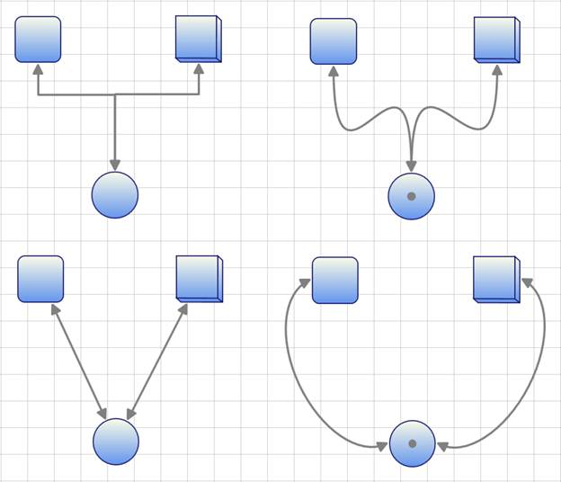
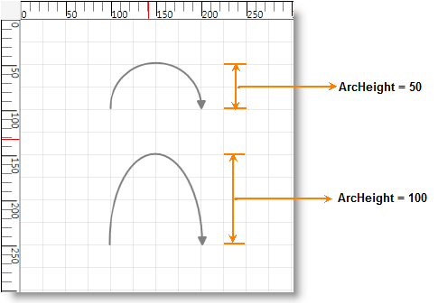
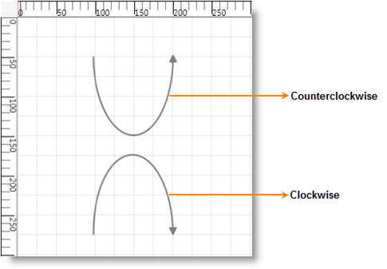

The ConnectorType property specifies the type of connector to be used for connection.
|
Property |
Description |
Type |
Data Type |
Reference Link |
|
ConnectorType |
Gets or sets the connector type to be used. There are four values namely Orthogonal, Straight, Bezier and Arc can be specified. Default Value is Orthogonal. |
Dependency property |
ConnectorType.Orthogonal ConnectorType.Bezier ConnectorType.Straight ConnectorType.Arc |
NA |
Following types of connectors are supported:
· Orthogonal—Creates a line in which line segments (if any) are placed at right angles to each other.
· Bezier—Renders a Bezier curve with two points.
· Straight—Renders a line with two points.
· Arc—Creates a link between two nodes.
The following code illustrates how to set the connector type:
|
[C#]
LineConnector l1 = new LineConnector(); l1.HeadNode = n1; l1.TailNode = n2; l1.ConnectorType = ConnectorType.Bezier; diagramModel.Connections.Add(l1); |
|
[VB]
Dim l1 As New LineConnector() l1.HeadNode = n1 l1.TailNode = n2 l1.ConnectorType = ConnectorType.Bezier diagramModel.Connections.Add(l1) |

Figure 59: Connector Types
Arc Line Connector Type
Arc Line Connector creates link between two nodes. This can act as other line connectors like Bezier, Straight and Orthogonal. You can blend the Arc Line Connector and change its angel. Arc height and direction can be customized.
Properties
Table 30: Arc Line Connector Customization Property Table
|
Property |
Description |
Type of the property |
Data Type |
Reference Links |
|
ArcHeight |
Gets or sets a value for the height of the Arc connector. The default value is 50. |
Dependency property |
double |
NA |
|
ArcDirection |
Gets or sets a value for the direction of the Arc connector. The default value is Clockwise
|
Dependency property |
SweepDirection |
NA |
Customizing Arc Line Connector type
Use the ArcHeight and the ArcDirection property of ConnectorBase to customize the hieght and direction fo the Arc.
· ArcHeight – Gets or Sets the height of the Arc.
· ArcDirection – Gets or Sets the direction of the Arc
Following code illustrates how to customize the hieght and direction fo the Arc:
|
[C#] LineConnector l = new LineConnector(); l.ConnectorType = ConnectorType.Arc; l.ArcHeight = 100; //l.ArcDirection = SweepDirection.Clockwise; // Default l.ArcDirection = SweepDirection.Counterclockwise; l.StartPointPosition = new Point(50, 150); l.EndPointPosition = new Point(150, 150);
diagramModel1.Connections.Add(l);
|
|
[VB] Dim l As New LineConnector() l.ConnectorType = ConnectorType.Arc l.ArcHeight = 100 'l.ArcDirection = SweepDirection.Clockwise; // Default l.ArcDirection = SweepDirection.Counterclockwise l.StartPointPosition = New Point(50, 150) l.EndPointPosition = New Point(150, 150)
diagramModel1.Connections.Add(l)
|


Figure 60: Customized Arc Line Connector